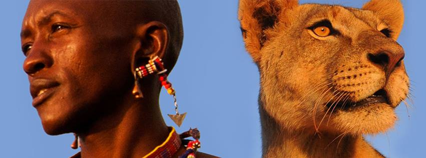

Promoting Coexsitance
In the last 50 years an estimate of 50% of africas lions have disappeared. We believe the fate of the lion lies in the hands of the people who live with them, by empowering warriors who we're once lion killers and working closely with communities.
Lion Guardians strive to prevent human-lion conflict before it happens. Lion Guardians, Conserving lions & Preserving cultures
Maximize your time chilling at the campfire by staying at one of these campgrounds within Red River Gorge, KY. Some popular campgrounds are located below in the map.
Our Impact
From 2013 - 2014, the area of land that Lion Guardians monitored increased by almost 20% to roughly 525,000 hectares.
Lion populations in Amboseli ecosystem, which had tripled between 2009 and 2013, has stabilized to around 160 lions. Lions from this population have now been documented as dispersing as far afield as Nairobi National Park and Shompole Group Ranch, helping to maintain genetic diversity between different lion populations
Lion Guardians has developed a training program to spread their knowledge, tools, and expertise to sites with conflicts between people and lions around Africa. Most notably, in 2015 they helped train and coach African Parks’ rangers in Rwanda’s Akagera National Park after the reintroduction of lions to the park.
